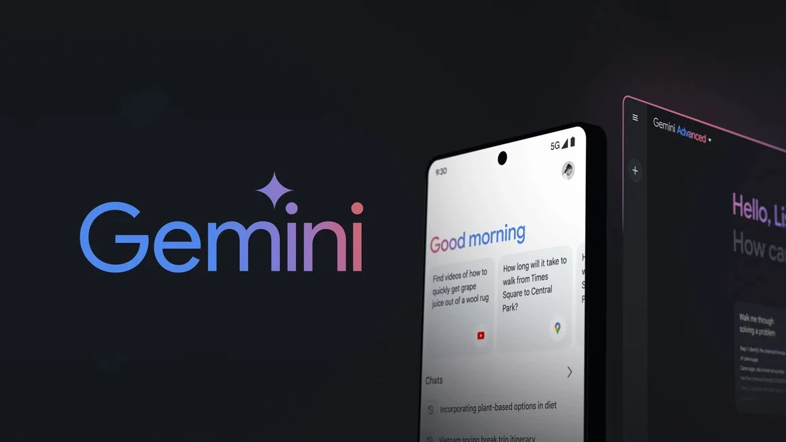
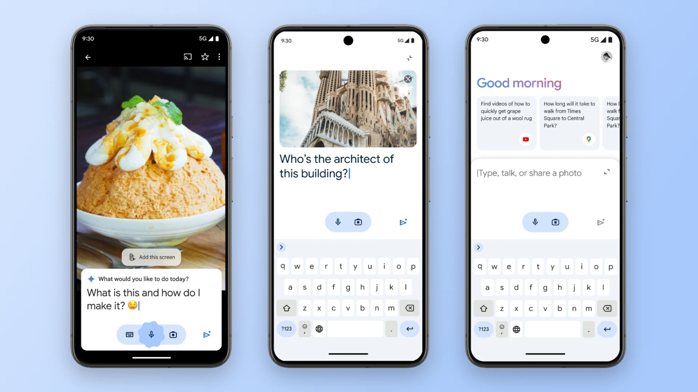

Google перезапустила чат-бот Bard. Теперь он называется Gemini — так же, как и фирменное семейство моделей искусственного интеллекта.
Базовая версия чат-бота Gemini работает на базе модели Gemini Pro 1.0 и доступна на более чем 40 языках в более чем 230 странах (в России сервис по-прежнему недоступен).
Под крыло бренда Gemini вошёл ещё один сервис Google — Duet AI, набор интеллектуальных возможностях в Gmail, «Документах» и других офисных приложениях.
Gemini Advanced. Появился платный тариф, который открывает доступ к модели Gemini Ultra 1.0 — самой мощной и функциональной технологии искусственного интеллекта Google. Компания утверждает, что Ultra 1.0 лучше справляется с логическими рассуждениями, творчеством и программированием, а также лучше понимает контекст из истории общения.
В будущем Gemini Advanced предложит улучшенные возможности программирования, анализа данных и работы с разными типами контента (текст, фото, аудио, видео). Ещё скоро технология заработает в приложениях Google Workspace, заменив Duet AI.
Gemini Advanced доступен в рамках подписки Google One AI Premium. Первые два месяца — бесплатно, далее — 19,99 доллара в месяц (~1800 рублей).
В тариф Google One AI Premium входят все преимущества Google One Premium (стоит 10 долларов в месяц), в том числе 2 ТБ места на облаке.
Мобильная версия Gemini. Google представила мобильное приложение Gemini для Android. Пользователь может выбрать чат-бота в качестве цифрового помощника по умолчанию вместо «Google Ассистента». В таком случае Gemini будет вызываться привычным способом: по зажатию кнопки питания, свайпу из нижнего угла экрана или фразе «Окей, Google».
Мобильная версия Gemini умеет воспринимать текстовые и голосовые команды, а ещё способна проанализировать загруженное изображение или скриншот текущего экрана. Некоторые функции «Ассистента» позже перекочуют в Gemini, в том числе управление устройствами умного дома и установку таймеров и напоминаний.
На iOS чат-бот появится в приложении Google в течение ближайших недель. Переключатель для активации Gemini будет располагаться на домашней странице над панелью поиска.
Gemini для iOS и Android пока доступен в США и только на английском языке. Со следующей недели география доступности будет постепенно расширяться. Как и список поддерживаемых языков — на первом этапе заявлены японский и корейский.
Эта крутая история была опубликована 27.01.2024